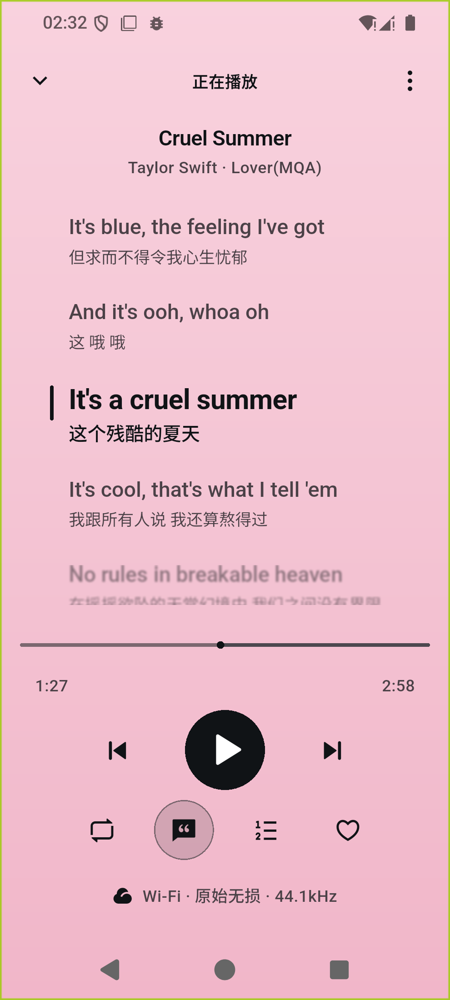
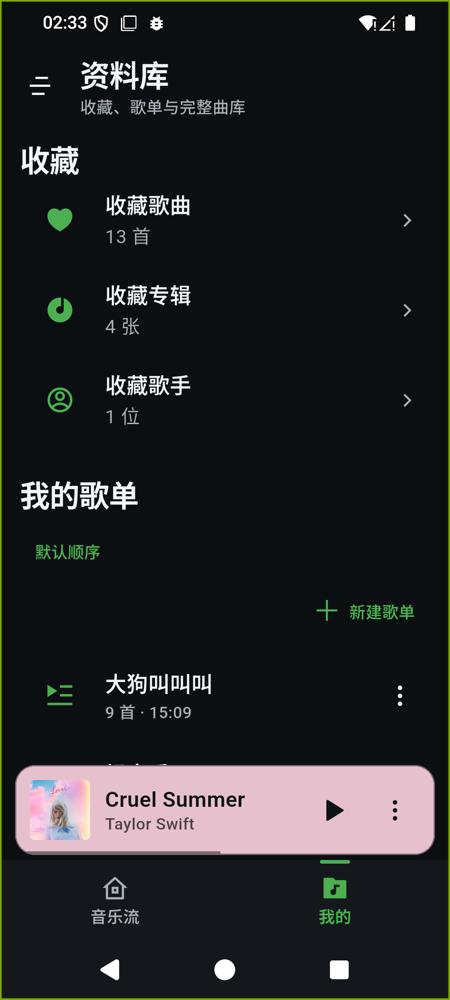

{kind=link}
{kind=link}
Every album
sets its own mood.
Colors drawn from the artwork give each album its own atmosphere. Playback, favorites and your queue stay within easy reach.
Made for your music library
The song you never skip. The album you return to.
Keep your collection in your own library, and your favorites close.
Artwork sets the scene. Lyrics follow the melody.
From the moment you press play, settle into the music.
Colors drawn from the artwork give each album its own atmosphere. Playback, favorites and your queue stay within easy reach.
Synced lyrics highlight each line as it plays. Tap a line to jump to that moment, and choose the lyric sources and priorities that work for you.

View app screenshot · UI in Chinese
Your collection. Your world of music.Connect your NAS or music server. Bring albums, artists, playlists and favorites together in one calm, organized place.
Manage multiple compatible music servers and switch between collections. Random picks and recent additions help you find something new in the music you already own.
Download songs, albums and playlists in the native app. Save your music before you go, and keep listening beyond the reach of a connection.
Set multiple server addresses for each library and rank them by priority. Switch automatically when a connection fails, or lock in an address yourself.
Stream original audio or use server transcoding. Set separate quality preferences for Wi-Fi and mobile data to balance sound and data use.
Crossfade, preloading for the next track and background playback on mobile keep your listening in rhythm.
Built with Flutter and open source under the MIT license. Explore the code, share an idea and help make Echoes better.
Bring your music library. Let Echoes take it from here.
Get Echoes for Android (opens in a new tab) All releases and other platforms (opens in a new tab)Mobile comes first. See each release for available downloads.
Desktop and web support are in progress; iOS installation requires signing.
Echoes is a client for self-hosted music. You need a Navidrome server, or a server compatible with Subsonic / OpenSubsonic, and a working account to connect your own collection.
After installation, follow the setup steps to enter a library name, server address and login details. For help setting up a server or multiple addresses, see the getting started guide (in Chinese) (opens in a new tab).
Downloads are available in native clients. On Android, you can download songs, albums and playlists, and manage the saved files. The web app does not currently support local audio downloads or audio-file caching. See the project documentation for progress on other platforms.
{kind=link}
{kind=link}